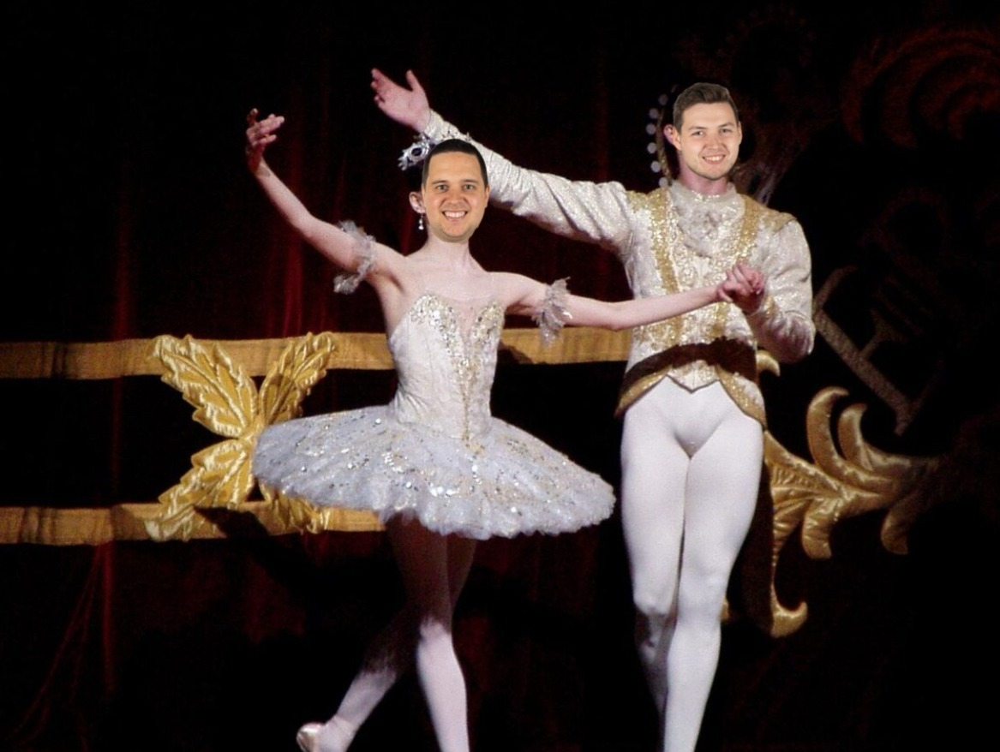
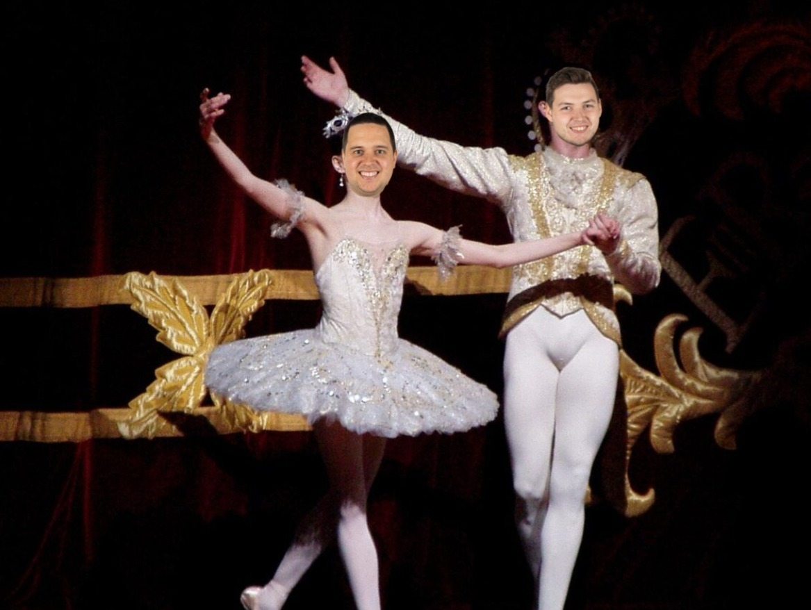

Musikk, dans og drama
For deg som elsker scenekunst og kreativ utfoldelse! Her får du jobbe med musikk, dans og teater i både teori og praksis.

Fellesfag | VG1
Programfag | VG2
Programfag | VG3
For deg som elsker scenekunst og kreativ utfoldelse! Her får du jobbe med musikk, dans og teater i både teori og praksis.

Fellesfag | VG1
Programfag | VG2
Programfag | VG3